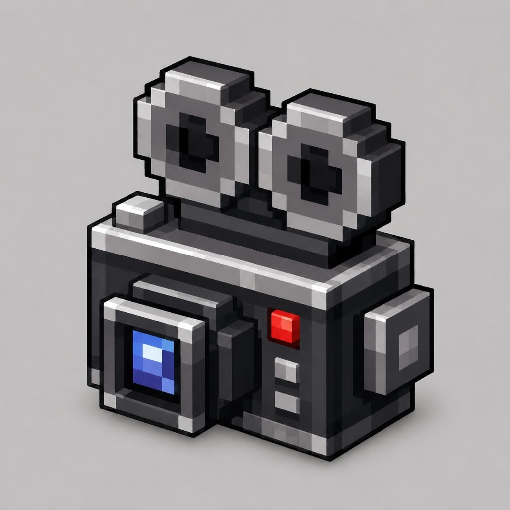

v— · Replay для серверов · by BossBranch
Скачайте Android-приложение Bedrock Server Replay и зайдите в Minecraft с телефона.
Или используйте этот ПК как хост — Minecraft на телефоне подключается к IP ниже (одна Wi‑Fi сеть):
Расширенный список может включать нестабильные версии клиента. Запись и просмотр на них могут работать хуже.
Реплеи и настройки: %APPDATA%\BedrockServerReplay (остаются после удаления программы)